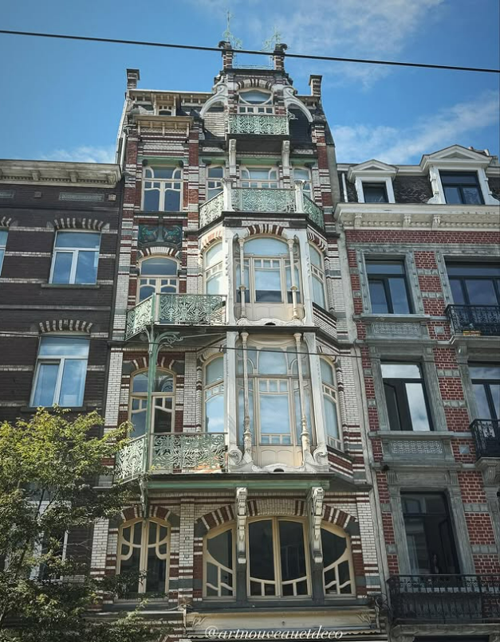

Publication d’auteur
Regarder d’abord. Nommer ensuite.
En grandissant en Belgique, certains détails d’Art Nouveau ou d’Art Déco sont déjà là avant même qu’on sache les nommer. Une ferronnerie, une céramique, un angle de façade, un seuil plus attentif que les autres.
Le site part de cette familiarité discrète. Il avance par villes, par bâtiments, par rapprochements. Les images ouvrent la lecture. Le texte vient pour préciser, relier, parfois retenir une mémoire, sans demander plus au lieu qu’il ne donne.

Trois entrées pour commencer sans détour
Quelques sujets suffisent pour prendre la mesure du site: une façade fondatrice, un contrepoint, puis un déplacement d’échelle ou de ville.
Entrer par une ville, puis élargir le regard
Le site avance par foyers urbains plus que par chronologie. Certaines villes ouvrent d’emblée plusieurs lectures.
Deux manières de lire
Certaines pages accompagnent longuement le regard. D’autres tiennent en une note plus brève. Cette alternance fait partie de la revue.